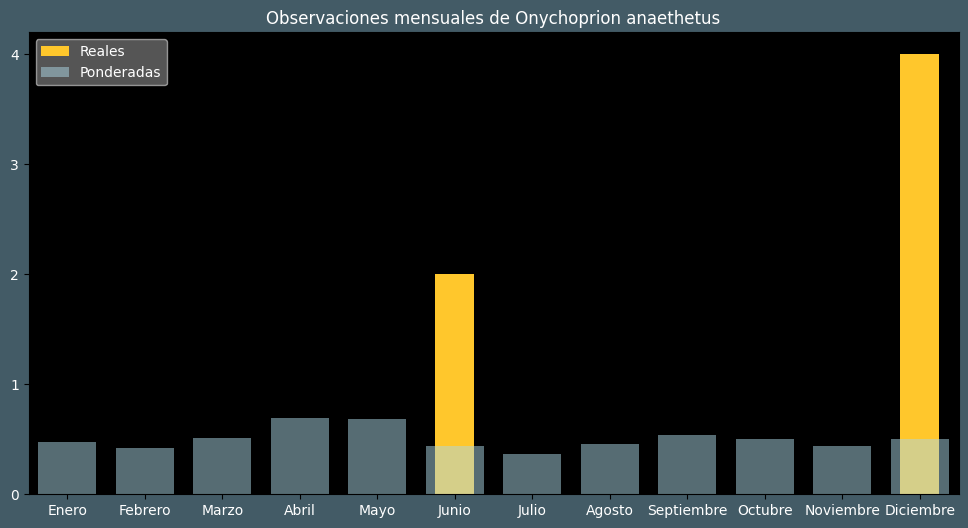

Observaciones por mes
Observations por hora

Categoría IUCN: ?
Género: Onychoprion
Familia: Laridae
Orden: Charadriiformes
Descubrimiento: Scopoli (1786)
| Idioma | Nombre |
|---|---|
| Afrikaans (af) | Brilseeswael (brilsterretjie) |
| Arabic (ar) | خرشنة ملجمة |
| Belarusian (be) | ? |
| Bulgarian (bg) | Кафявокрила рибарка |
| Catalan (ca) | Xatrac embridat |
| Chinese (zh) | 褐翅燕鸥 |
| Chinese traditional (zh-TW) | 白眉燕鷗 |
| Croatian (hr) | Smeđokrila čigra |
| Czech (cs) | Rybák uzdičkový |
| Danish (da) | Brilleterne |
| Dutch (nl) | Brilstern |
| English (en) | Bridled tern |
| Estonian (et) | Troopikatiir |
| Finnish (fi) | Ohjasnokitiira |
| French (fr) | Sterne bridée |
| German (de) | Zügelseeschwalbe |
| Greek (el) | Σταχτογλάρονο |
| Hebrew (he) | שחפית רסן |
| Hungarian (hu) | Álarcos csér |
| Icelandic (is) | Taumþerna |
| Indonesian (id) | Dara-laut batu |
| Italian (it) | Sterna dalle redini |
| Japanese (ja) | マミジロアジサシ |
| Korean (ko) | 에위니아제비갈매기 |
| Latvian (lv) | Brūnspārnu zīriņš |
| Lithuanian (lt) | Rudasparnė žuvėdra |
| Maceodnian (mk) | ? |
| Malayalam (ml) | തവിടൻ കടലാള |
| North_sami (se) | Njuolasgožučearret |
| Norwegian (no) | Tøyleterne |
| Persian (fa) | پرستو دریایی پشت دودی |
| Polish (pl) | Rybitwa brunatnogrzbieta |
| Portuguese (pt) | Gaivina-de-dorso-castanho |
| Russian (ru) | Бурокрылая крачка |
| Serbian (sr) | Mrka čigra |
| Slovak (sk) | Rybár tmavokrídly |
| Spanish (es) | Charrán embridado |
| Swedish (sv) | Tygeltärna |
| Thai (th) | นกนางนวลแกลบคิ้วขาว |
| Turkish (tr) | Sürmeli sumru |
| Ukrainian (uk) | Крячок бурокрилий |